| 日付 | 2013年10月27日（日） |
|---|---|
| 山域 | 丹沢 |
| メンバー | 家族（妻、長女・2歳、長男・0歳） |
| 山行形態 | 子連れ日帰り |
| アクセス | 車 |
| ルート (Map) | ヤビツ峠 (8:25) - (10:00) ベンチ (10:10) - (10:40) 分岐点 - (11:03) 大山 (11:46) - (12:55) ヤビツ峠 |
ここ最近、遠出ばかり続けていたので、
久しぶりに近場の山に行くことにする。
目的地は以前に何度か訪れた丹沢の大山。
秦野にある保育園の年間行事で
2歳児がヤビツ峠から大山を往復していたため、
同じコースに挑戦してみることにする。
ヤビツ峠の駐車場に到着。標高760m。
バスで何度か来たことはあるが、車でここに来るのは初めてだ。
この辺りは紅葉が始まっている。
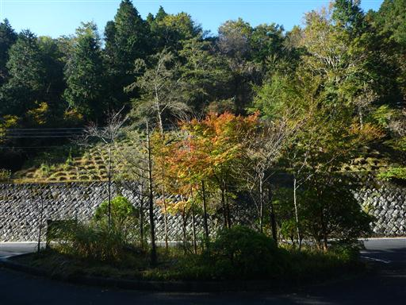
最初は歩くのを嫌がっていた娘だが、すぐにキャリアを降りて歩き出す。滑り出しは順調だ。
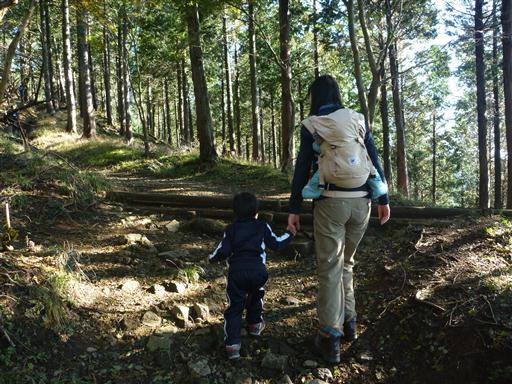
歩きやすい場所は手を放しても歩けるようになった。
余りこけることもなく上手に歩いている。
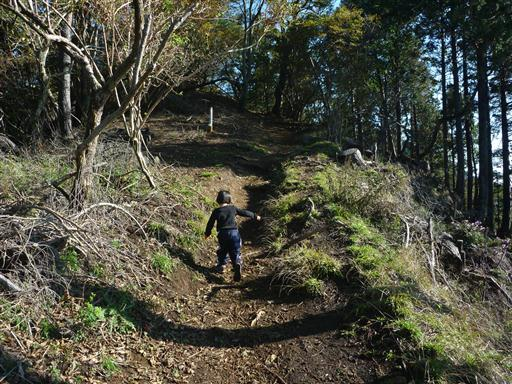
傾斜のきつい場所や小さな岩場などは手をつないで乗り越えていく。
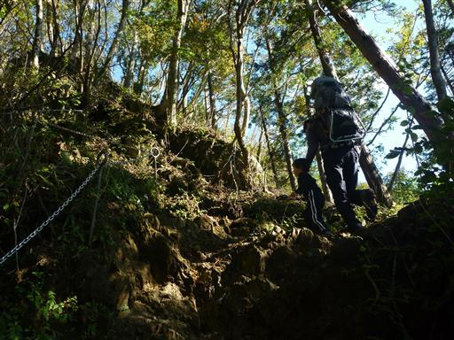
少し登ると展望が開けて大山の山頂部が見えてきた。
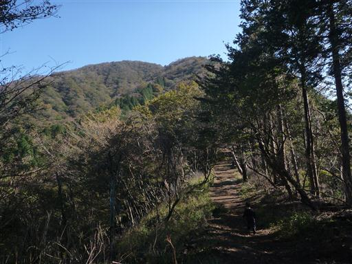
頭上は黄葉が美しい。
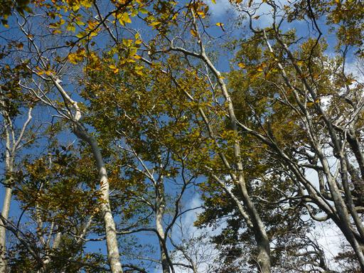
最初は快調に登っていたが、娘が途中でぐずり始める。
歩く速度が大きく落ちたのでベンチに座って休憩。少しおやつを食べる。
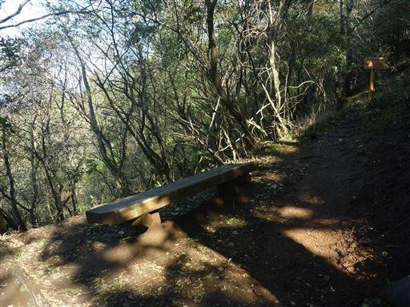
休憩をとったら、何とか励まして歩き始める。
展望が開けて丹沢中心部の山々が見えてくる。
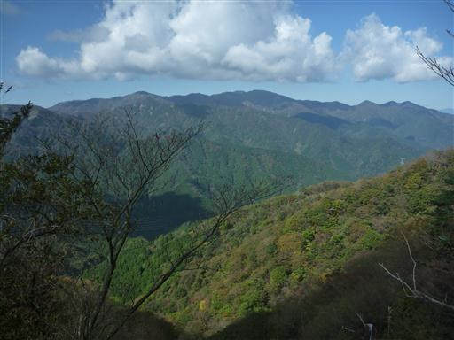
少し雲がかかっているが、遠く富士山が見えている。
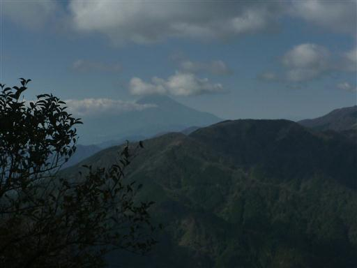
ケーブルカーからの道と合流する。山頂まではあと一登りだ。
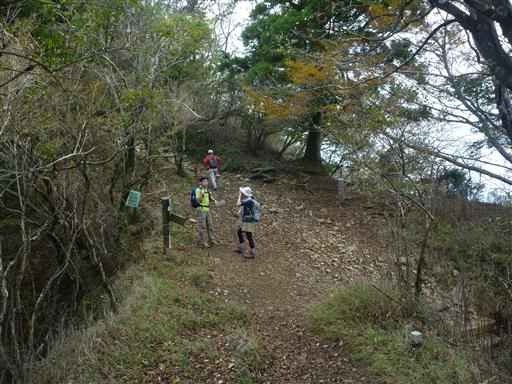
鳥居をくぐる。
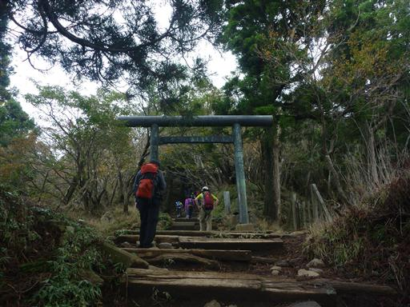
最後はそこそこ急な坂が続く。もうすぐ山頂と励ましながら、ゆっくり登っていく。
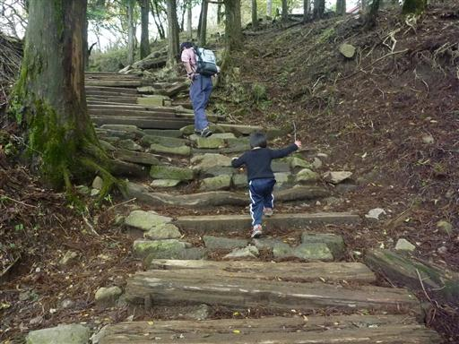
急坂を越えると山頂の建物が見えてきた。
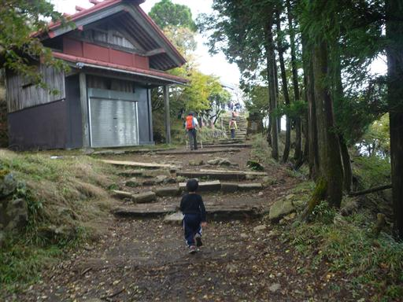
遂に大山山頂に到着する。標高1252m。
コースタイム1時間10分の所を、2時間30分もかかってしまった。
短いコースではあったが、標高差は500mもあり、よく頑張った。
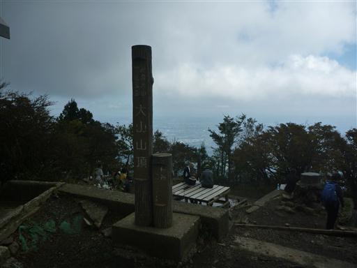
山頂に建つ阿夫利神社にお参りする。
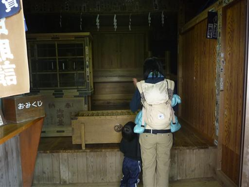
だいぶ雲が出てきて富士山はもう見えなくなっていたが、下界の街はよく見えている。
疲れたので山頂でのんびり昼食をとる。
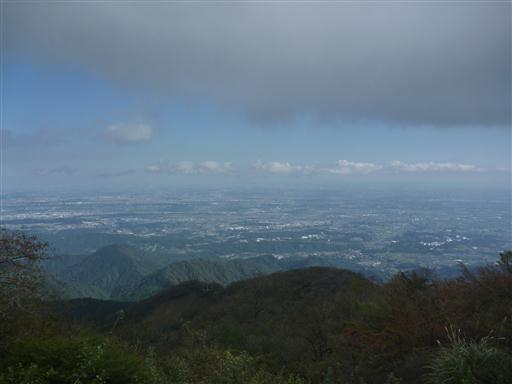
下山はキャリアに乗せて、そこで娘は一眠り。
最後の方で目を覚ましたため、下山も少し歩かせてみる。
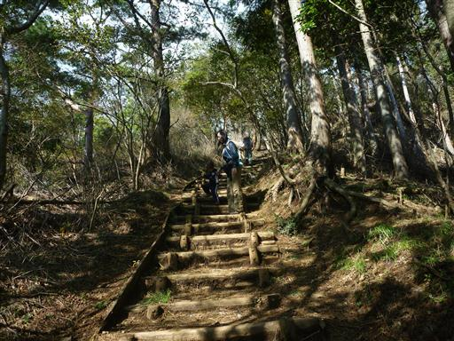
木段は大きな虫が這い上がって来ているように見える…
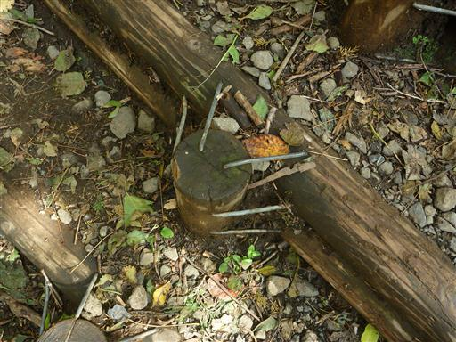
無事ヤビツ峠に下山。
往復歩くことはできなかったが、それなりのコースを登り切ることができて
娘の成長を感じられた登山だった。
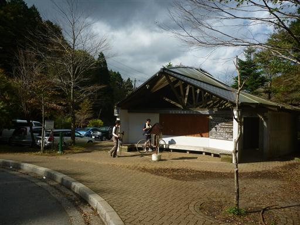